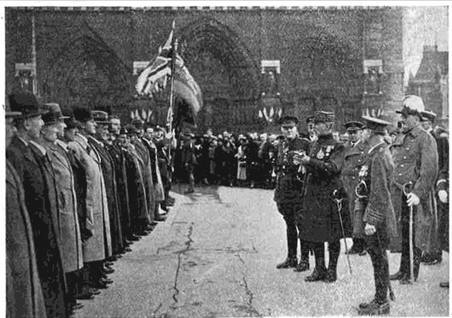

One of the very first overseas Branches, formed in 1921. Based on "The history of the Paris Branch, one of the very first overseas Branches formed in 1921" (Paris Branch).
Download the full history (PDF) ›
On 4 May 1921, a group of gentlemen, mostly belonging to the Veterans' Association formed in Paris, met to consider the formation of the Paris Branch of the British Legion. The decision was made then and there to start the Branch, with work beginning the following month. The first Honorary Presidents were the British Ambassador, Lord Hardinge of Penshurst, and Field Marshal Foch, while Rear-Admiral Sir Edward Heaton-Ellis was elected Chairman.
Since its first years the Branch has focused on looking after the numerous ex-servicemen and their dependents who have fallen on hard times in France. One example from 1925 is that of an ex-Duffadar of the Bombay cavalry who had lost his right arm in action on the Belgian front. He had married a French woman, they had two children, and after the war he bought a small business in Amiens. Debts forced him to sell it and come to Paris in search of work. With his savings exhausted, he approached the Legion. The Branch found work for him and, fighting for his pension with the Indian Government, finally acquired a satisfactory settlement.
Holding an Annual Service of Remembrance in Notre Dame on 11 November is one of the traditions of the Branch, dating from the 1920s. It was initiated when, on 24 July 1924, the British Commonwealth War Memorial plaque in Notre Dame was unveiled by H.R.H. Prince Edward of Wales, accompanied by his brother Prince Henry, in the presence of the President of the French Republic, Monsieur Gaston Doumergue, and Marshal Foch.
Another tradition maintained over the years is the rekindling of the flame, which takes place in August every year. The Branch has upheld this tradition since 1924, even during the pandemic, the only exception being the years of the Second World War. For the 10th year in succession, the ceremony of reviving the Flame of Remembrance on the Tomb of the French Unknown Soldier at the Arc de Triomphe was carried out by the Paris Branch on 4 August 1935, the 21st anniversary of the entry of Great Britain and the Empire into the Great War.
The visit of the Prince of Wales to the headquarters of the Branch was a great success. Noticing General Gouraud, the Prince stepped smartly forward to the Military Governor of Paris with a "Comment allez-vous, mon Général?" After greeting the members of the Women's Auxiliary Section and members of the Branch, he expressed his admiration at the splendidly appointed rooms the Legion had brought into being.
Sir George Clerk, British Ambassador to France, presided at the 15th Annual Dinner of the Paris Branch. More than 300 members and ex-service non-members attended, and the principal guest was Lord Trenchard, Marshal of the Royal Air Force.
Soon after the Second World War broke out the Branch closed down, but Branch members were not inactive: they still held meetings throughout the war while in exile in London. Mr. George Norbury, a member from the very first days of the Branch until his death in 1988, remembered attending lunches and reunions of the Branch in London, at one of which, at least, Charles de Gaulle was a guest of honour.
On 14 December 1945 the Branch officially reopened with a new committee and Sir Charles Henderson as Chairman. Despite post-war difficulties and a lack of funds, the Chairman, in his address of 1946, said they aspired "not only to attain the position held prior to the war by the Paris Branch of the Legion, but to exceed it". He also mentioned arrangements being made to cooperate with the British Charitable Fund to provide relief when required, an arrangement which still functions to this day.
In the 1950s, a succession of capable Branch Chairmen propelled the Branch forward. Among them were Brigadier S. Swinton-Lee, DSO, Lord Norwich, and Colonel H.A. Wilsden, OBE, the latter Chairman for 7 remarkable years which saw Branch membership rise from about 650 to nearly 1,000.
1964 was a landmark year, as the Branch was one of the leading parties marking the 50th anniversary of the outbreak of the First World War. That year was also the 20th anniversary of the Liberation of Paris, and there was one particularly poignant ceremony: the funeral of Wing Commander Forest Yeo-Thomas, "White Rabbit", a hero of the Second World War, at the Embassy Church, where the address was given by General Koenig, and among those present was 97-year-old General Weygand.
With the Legion officially becoming The Royal British Legion, in 1972 Her Majesty the Queen visited Paris and Branch members had the honour of meeting her. In 1974 there were special ceremonies to mark the 50th anniversary of the unveiling of the Memorial Plaque in Notre Dame, and on 11 November that year the Remembrance Ceremony at Notre Dame was presided over by Admiral of the Fleet the Earl Mountbatten of Burma. Also in November 1974 the Branch celebrated its 250th luncheon, a tradition that started back in February 1951.
In 1995 the VE Day celebrations included a notable event at the Standard Athletic Club in Meudon with a Drum Head Service. All Ambassadors of WWII Allies were invited to attend, with young schoolchildren, scouts, guides, cubs and brownies, engaging the younger generation and demonstrating that the Legion is not just for old soldiers. The Branch has held celebrations for the 90th Anniversary of the Legion and the 60th anniversary of Her Majesty's accession to the throne.
In June 2009, the Paris Branch moved from rue Boudreau, having "lived" there for nearly 81 years, to new premises just a stone's throw from the Arc de Triomphe — now 28 rue des Acacias, Paris 17e.
Reflecting on her journey, Janet Warby, the Paris Branch Secretary, said: "I come from a Legion family, with my Grandmother joining in 1935 and my parents, husband and now children being members. I am currently the Senior Standard Bearer
Today the Branch continues to organise the Annual Service of Remembrance, formerly held at Notre Dame but, pending reconstruction following the 2019 fire, now held at the Cathedral of St. Louis des Invalides, and the Annual Rekindling Ceremony at the Arc de Triomphe. It works with local schools, inviting children to take part in a poetry competition, with the winners reciting their poems at the Cathedral on 11 November. Two collections of members' stories, compiled and edited by Grahame Warby, are published as "Our Say, Not Heresay" and "Our Last Say, Not Heresay".
Download the full history (PDF) › — the PDF contains the full text and photographs from the Paris Branch and Legion Magazine.